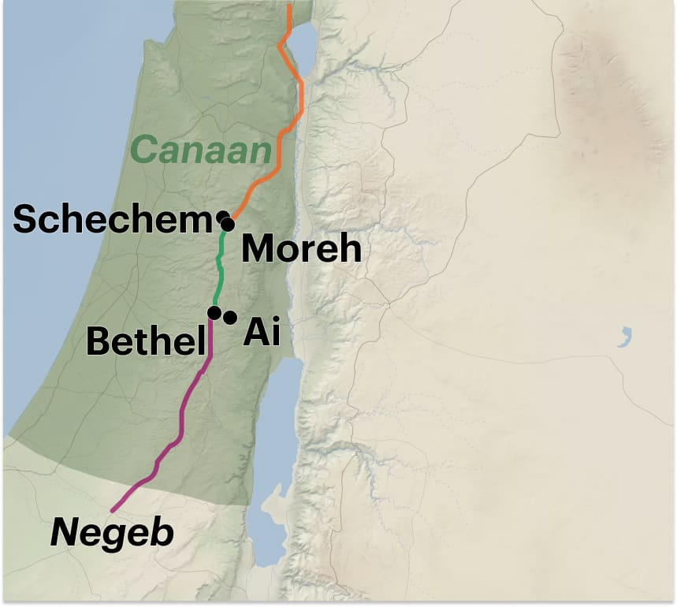
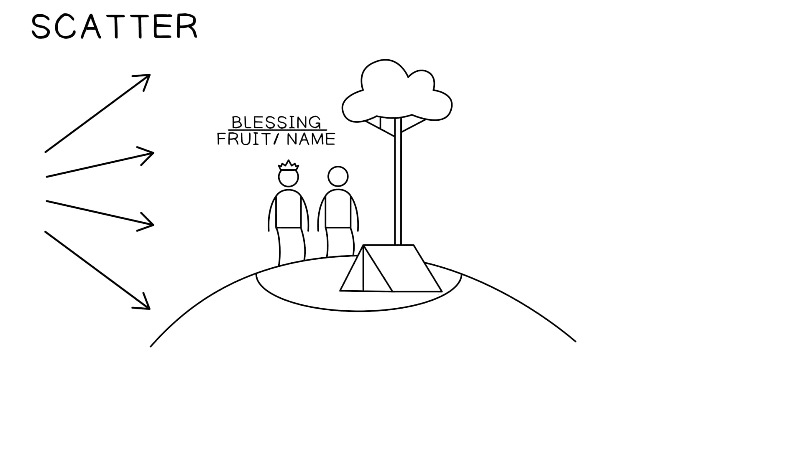

Sessão 5: Deus Chama Avram e Promete Bênção Session 5: God Calls Avram and Promises Blessing
Principais AprendizadosKey Takeaways
- O chamado de Avram é apresentado na linguagem de Gênesis 1–2 e prepara o leitor para os temas do restante de sua história — bênção, nascimento, terra, família e um grande nome.Avram’s call is framed in the language of Genesis 1–2, and it prepares the reader for the themes in the rest of his story—blessing, birth, land, family, and a great name.
- A saída de Avram de sua família ecoa Gênesis 2:24 e a bênção da multiplicação frutífera.Avram leaving his family echoes Genesis 2:24 and the blessing of fruitful multiplication.
- Deus promete tornar grande o nome de Avram, desenvolvendo ainda mais o tema dos nomes ou do ato de nomear introduzido em várias histórias de Gênesis 1–11.God promises to make Avram’s name great, further developing the theme of names or naming introduced in various stories in Genesis 1–11.
Estrutura Macro de Gênesis 12:1–9Macro Design of Genesis 12:1–9
Gênesis 12:1–9. Tradução e Design Literário por Tim Mackie para o BibleProject Classroom: Abraão (2021).Genesis 12:1–9. Translation and Literary Design by Tim Mackie for BibleProject Classroom: Abraham (2021).
Avram Deixa a Babilônia e Recebe a Bênção de DeusAvram Leaves Babylon and Receives God’s Blessing
A sequência narrativa de dois chamados e promessas divinas, cada um seguido pela obediência de Avram, cria um padrão claro para o leitor. Quando o escolhido de Deus segue o comando divino apesar de muitas incertezas, há uma bênção esperando para ser descoberta.The narrative sequence of two divine calls and promises, each followed by Avram’s obedience, creates a clear pattern for the reader. When God’s chosen one follows the divine command despite many unknowns, there is a blessing just waiting to be discovered.
Tradução e Design Literário de Gênesis 12:1–3Translation and Literary Design of Genesis 12:1–3
Gênesis 11:27–12:5. Tradução e Design Literário por Tim Mackie para o BibleProject Classroom: Noé a Abraão (2020).Genesis 11:27–12:5. Translation and Literary Design by Tim Mackie for BibleProject Classroom: Noah to Abraham (2020).
“Vá Você Mesmo!”Get Yourself Going!
A expressão hebraica para “vá você mesmo” (לך לך) em 12:1 é única e volta a aparecer somente no ápice dos dez testes de Avram, em 22:2.The Hebrew phrase for “get yourself going” (לך לך) in 12:1 is unique, and it’s repeated again only at the culmination of Avram’s 10 tests in 22:2.
Vá você mesmo da sua terra ... para a terra que eu lhe mostrarei.Get yourself going from your land ... to the land that I will show you.
Vá você mesmo para a terra de Moriá e ofereça [Yitskhaq] ali como oferta de subida, em um dos montes que eu lhe direi.Get yourself going to the land of Moriah, and offer [Yitskhaq] there as a going-up offering on one of the mountains that I will tell you.
A Nova Família de AvramAvram’s New Family
Avram se separa de sua família e vai para um novo lugar onde Deus criará uma nova família. Isso repete o padrão do Éden, onde Deus dividiu o humano solitário em dois humanos para criar a primeira família escolhida. Segundo Gênesis 2, somente Deus pode fornecer a “ajuda” necessária (עזר) capaz de livrar seu escolhido da impotência.Avram separates from his family and goes to a new place where God will create a new family. This is a repetition of the Eden pattern where God split the lone human into two humans to create the first chosen family. According to Genesis 2, only God can provide the necessary “help” (עזר) that can deliver his chosen one from helplessness.
Não é bom que o humano esteja sozinho. Farei uma fonte de ajuda libertadora (עזר) que corresponda ao humano.It is not good for the human to be alone. I will make a source of delivering-help (עזר) that corresponds to the human.
Por isso o homem deixará seu pai e sua mãe, unir-se-á à sua mulher, e os dois se tornarão uma só carne.For this reason, a man will leave his father and mother, and he will be joined to his wife, and the two will become one flesh.
Vá você mesmo ... da sua terra, da sua família de nascimento e da casa de seu pai...Get yourself going … from your land, from your birth-family and from the house of your father ...
À sua descendência (זרע) darei esta terra.To your seed (זרע) I will give this land.
Nas duas narrativas, a promessa de Deus é prover aquilo que os humanos não conseguem prover por si mesmos. Em Gênesis 2, é a “ajuda libertadora” (עזר), sem a qual o humano não pode florescer no Éden; em Gênesis 12, é a “descendência” (זרע), sem a qual a família de Avram não pode se tornar bênção para as nações.In both narratives, God’s promise is to provide what the humans cannot provide for themselves. In Genesis 2, it’s the “delivering help” (עזר) without which the human cannot flourish in Eden, and in Genesis 12, it’s the “seed” (זרע) without which Avram’s family cannot become a blessing to the nations.
Grandeza e BênçãoGreatness and Blessing
E farei de você uma grande nação, e eu o abençoarei, e farei grande o seu nome; e assim você será uma bênção.And I will make you a great nation, and I will bless you, and I will make your name great; and so you shall be a blessing.
As duas linhas poéticas paralelas contêm duas promessas de grandeza e duas promessas de bênção.The two parallel poetic lines contain two promises of greatness and two promises of blessing.
- Grande nação / Grande nomeGreat nation / Great name
- Eu o abençoarei / Você será uma bênçãoI will bless you / You will be a blessing
O primeiro par de linhas destaca o que Deus fará por Avram (torná-lo grande e abençoá-lo), enquanto o segundo destaca aquilo que Avram se tornará em relação aos outros.This first pair of lines highlights what God will do for Avram (make great and bless), while the second item highlights what Avram will become in relationship to others.
- Grande nome = uma reputação significativa entre as nações.Great name = a significant reputation among the nations.
- Seja uma bênção = Avram é convocado a tornar-se um canal da bênção divina que recebeu, à medida que a transmite às nações ao seu redor.Be a blessing = Avram is summoned to become a conduit of the divine blessing he received as he gives it out to the nations around him.
Essas linhas poéticas criam uma vocação para Avram. Ele é chamado para uma nova terra semelhante ao Éden, onde Deus o transformará em uma nova família escolhida, para que ele possa se tornar um canal da bênção divina para outros. Essa vocação é o foco das linhas finais do poema.These poetic lines create a vocation for Avram. He is being summoned to a new Eden-like land where God will create him into a new chosen family where he can become a channel of divine blessing to others. This vocation is the focus of the final lines of the poem.
E eu abençoarei os que o abençoarem, e aquele que o tratar como amaldiçoado eu amaldiçoarei; e em você todas as famílias da terra encontrarão bênção.”And I will bless those who bless you, and the one who treats you as cursed I will curse; and in you all the families of the land will find blessing.”
Aqui, Deus marca Avram como seu escolhido e se compromete a protegê-lo da morte. A promessa vem em duas partes.Here, God marks Avram as his chosen one and commits to protecting him from death. The promise comes in two parts.
- Como conduto da bênção de Deus, aqueles que se associam a Avram de forma amigável receberão a bênção de Deus.As a conduit of God’s blessing, those who associate with Avram in a friendly way will receive God’s blessing.
- Por outro lado, aqueles que o “tratam como amaldiçoado” (מקללך, de קלל, “tratar como insignificante”) receberão o oposto, “maldição”.On the flip side, those who “treat him as cursed” (מקללך, from קלל “to treat as insignificant”) will receive the opposite, “curse.”
Avram como um Novo Adão e NoéAvram as a New Adam and Noah
A promessa divina de bênção corresponde à bênção divina dada primeiro à humanidade e depois a Noé após o dilúvio.The divine promise of blessing corresponds to the divine blessing first given to humanity and then to Noah after the flood.
27 Elohim criou a humanidade à sua imagem, à imagem de Elohim a criou; macho e fêmea os criou. 28 E Elohim os abençoou e lhes disse: “Sejam fecundos e multipliquem-se, encham a terra, submetam-na e dominem sobre os peixes do mar, as aves do céu e todo ser vivente que se move sobre a terra.”27 Elohim created humanity in his image, in the image of Elohim he created him; male and female he created them. 28 And Elohim blessed them; and Elohim said to them, “Be fruitful and multiply, and fill the earth, and subdue it; and rule over the fish of the sea and over the birds of the sky and over every living thing that moves on the earth.”
1 Elohim abençoou Noé e seus filhos e lhes disse: “Sejam fecundos e multipliquem-se e encham a terra. 2 O temor e o terror de vocês estarão sobre todo animal da terra e sobre toda ave do céu; tudo o que rasteja pelo chão e todos os peixes do mar foram entregues em suas mãos.”1 And Elohim blessed Noah and his sons and said to them, “Be fruitful and multiply, and fill the earth. 2 The fear of you and the terror of you will be on every beast of the earth and on every bird of the sky; with everything that creeps on the ground, and all the fish of the sea, into your hand they are given.”
2 E farei de você uma grande nação, e eu o abençoarei, e farei grande o seu nome; e assim você será uma bênção; 3 e abençoarei os que o abençoarem, e aquele que o tratar como amaldiçoado eu amaldiçoarei; e em você todas as famílias da terra encontrarão bênção.2 and I will make you a great nation, and I will bless you, and I will make your name great; and so you shall be a blessing; 3 and I will bless those who bless you, and the one who treats you as cursed I will curse; and in you all the clan-families of the land will find blessing.
O poema de bênção de 12:2–3 tem cinco bênçãos que correspondem, de maneira interessante, às cinco maldições de Gênesis 1–11, e tem sete linhas poéticas que correspondem às bênçãos posteriores dadas aos patriarcas, que também consistem em sete partes (Cassuto, Umberto (2012). From Noah to Abraham. Varda Books. 331).The poem of blessing in 12:2–3 has five blessings that interestingly correspond to the five curses in Genesis 1–11, and it has seven poetic lines that correspond to the later blessings given to the patriarchs, which also consist of seven parts (Cassuto, Umberto (2012). From Noah to Abraham. Varda Books. 331).
- E farei de você uma grande naçãoand I will make you a great nation
- e eu o abençoarei,and I will bless you,
- e farei grande o seu nome;and I will make your name great;
- e assim você será uma bênção;and so you shall be a blessing;
- e abençoarei os que o abençoarem,and I will bless those who bless you,
- e aquele que o tratar como amaldiçoado eu amaldiçoarei;and the one who treats you as cursed I will curse;
- e em você todas as famílias da terra encontrarão bênção.and in you all the clan-families of the land will find blessing.
As Cinco Maldições de Gênesis 3–11The Five Curses of Genesis 3–11
- Gn. 3:14 “amaldiçoado! é você” (serpente)Gen. 3:14 “cursed! are you” (snake)
- Gn. 3:17 “amaldiçoado! é o solo por sua causa” (homem)Gen. 3:17 “cursed! is the ground because of you” (man)
- Gn. 4:10 “amaldiçoado! é você, do solo” (Caim)Gen. 4:10 “cursed! are you from the ground” (Cain)
- Gn. 4:12 “o solo que Yahweh amaldiçoou!”Gen. 4:12 “the ground which Yahweh has cursed!”
- Gn. 4:13 “amaldiçoado! é Canaã”Gen. 4:13 “cursed! is Canaan”
“A Bíblia inteira pode ser retratada como uma resposta muito longa a uma pergunta muito simples: o que Deus pode fazer a respeito do pecado e da rebelião da raça humana? Gênesis 12–Apocalipse 22 é a resposta de Deus ao problema apresentado pelas narrativas sombrias de Gênesis 3–11. Ou ... Gênesis 3–11 estabelece o problema ao qual a missão de Deus dá resposta a partir de Gênesis 12 em diante. Gênesis 1–11 propõe um problema cósmico ao qual Deus deve fornecer uma resposta cósmica. Os problemas tão graficamente espalhados diante do leitor em Gênesis 1–11 não serão resolvidos apenas por encontrar um jeito de levar os seres humanos ao céu quando morrerem. O amor e o poder do Criador precisam responder não apenas ao pecado dos indivíduos, mas também à contenda e à hostilidade das nações; não apenas às necessidades dos humanos, mas também ao sofrimento dos animais e à maldição sobre o solo ... O chamado de Abrão é o início da resposta de Deus ao mal dos corações humanos, à luta entre as nações e ao gemido da criação inteira em sua condição quebrada.”“The whole Bible can be portrayed as a very long answer to a very simple question: What can God do about the sin and rebellion of the human race? Genesis 12–Revelation 22 is God’s answer to the problem posed by the bleak narratives of Genesis 3–11. Or ... Genesis 3–11 sets the problem that the mission of God addresses from Genesis 12 onward. Genesis 1–11 poses a cosmic problem to which God must provide a cosmic answer. The problems so graphically spread before the reader in Genesis 1–11 will not be solved just by finding a way to get human beings to heaven when they die. The love and power of the Creator must address not only the sin of individuals, but also the strife and hostility of nations; not only the needs of humans, but also the suffering on animals and the curse on the ground … The call of Abram is the beginning of God’s answer to the evil of human hearts, the strife of nations, and the groaning brokenness of his whole creation.”
Wright, Christopher (2006). The Mission of God: Unlocking the Bible’s Grand Narrative. IVP Academic. 195.Wright, Christopher (2006). The Mission of God: Unlocking the Bible’s Grand Narrative. IVP Academic. 195.
AvramAvram
- E farei de você uma grande naçãoand I will make you a great nation
- e eu o abençoarei,and I will bless you,
- e farei grande o seu nome;and I will make your name great;
- e assim você será uma bênção;and so you shall be a blessing;
- e abençoarei os que o abençoarem,and I will bless those who bless you,
- e aquele que o tratar como amaldiçoado eu amaldiçoarei;and the one who treats you as cursed I will curse;
- e em você todas as famílias da terra encontrarão bênção.and in you all the clan-families of the land will find blessing.
IsaqueIsaac
- e eu estarei com você,and I will be with you,
- e eu o abençoarei,and I will bless you,
- pois a você e à sua descendência darei todas estas terras,for to you and to your descendants I will give all these lands,
- e cumprirei o juramento que fiz ao seu pai Avram.and I will fulfil the oath which I swore to Avraham your father.
- multiplicarei a sua descendência como as estrelas do céu,I will multiply your descendants as the stars of heaven,
- e darei à sua descendência todas estas terras;and will give to your descendants all these lands;
- e pela sua descendência todas as nações da terra se abençoarão.and by your descendants all the nations of the earth shall bless themselves.
JacóJacob
- Que Deus lhe dê do orvalho do céu, etc.May God give you of the dew of heaven, etc.
- Que os povos prestem serviço a você,Let peoples serve you,
- e as nações se curvem diante de você.and nations bow down to you.
- Seja senhor sobre seus irmãos,Be lord over your brothers,
- e os filhos de sua mãe se curvem diante de você.and may your mother’s sons bow down to you.
- Maldito seja todo aquele que o amaldiçoar,Cursed be every one who curses you,
- e bendito seja todo aquele que o abençoar!and blessed be every one who blesses you!
Relação com as Seções JustapostasRelationship to Juxtaposed Sections
A jornada de Avram para Canaã é, na verdade, a conclusão daquilo que seu pai Terakh deixou inacabado em 11:31. As ações de Avram são claramente colocadas em contraste com as de seu pai.Avram’s journey to Canaan is actually a completion of what his father Terakh left undone back in 11:31. Avram’s actions are clearly set in contrast to his father.
Terakh tomou Abrão, seu filho, e Ló, filho de Harã, seu neto, e Sarai, sua nora, esposa de seu filho Abrão; e saíram juntos de Ur dos Caldeus para entrar na terra de Canaã; e foram até Harã e ali se estabeleceram.Terah took Abram his son, and Lot the son of Haran, his grandson, and Sarai his daughter-in-law, his son Abram’s wife; and they went out together from Ur of the Chaldeans in order to enter the land of Canaan; and they went as far as Haran, and settled there.
Abrão levou Sarai, sua esposa, e Ló, seu sobrinho, e todos os bens que ajuntaram, e as pessoas que eles ganharam em Harã, e partiram para a terra de Canaã; assim chegaram à terra de Canaã.Abram took Sarai his wife and Lot his nephew, and all their possessions which they had accumulated, and the persons which they had acquired in Haran, and they set out for the land of Canaan; thus they came to the land of Canaan.
Tradução e Design Literário de Gênesis 12:6–9Translation and Literary Design of Genesis 12:6–9
Gênesis 12:6–9. Tradução e Design Literário por Tim Mackie para o BibleProject Classroom: Noé a Abraão (2020).Genesis 12:6–9. Translation and Literary Design by Tim Mackie for BibleProject Classroom: Noah to Abraham (2020).
Mapa da Primeira Migração de Avram na Terra de CanaãMap of Avram’s First Migration in the Land of Canaan

Avram entra em Canaã pelo norte e passa pela região montanhosa que corre de norte a sul, com os vales costeiro e do rio Jordão de cada lado. Ao fazer isso, ele realiza várias paradas muito interessantes ao longo do caminho.Avram enters Canaan from the north, and he passes along the hill country that runs from north to south with the coastal and Jordan River valleys on each side. As he does so, he makes a number of very interesting stops along the way.
Avram, o Pastor, e as Cidades CananeiasAvram the Shepherd and the Canaanite Cities
Avram é retratado fazendo três paradas, as duas primeiras próximas a cidades no alto das colinas, centrais para a rede de estradas de Canaã. A narrativa destaca que ele não entra nas cidades povoadas pelos cananeus. Em vez disso, Avram acampa perto das cidades e constrói novos lugares de adoração para o Elohim que o chamou para essa terra.Avram is portrayed as making three stops, the first two near hilltop towns central to the highway network in Canaan. The narrative highlights how he does not enter the cities populated with Canaanites. Instead, Avram sets up camp near the cities, and he builds new places of worship for the Elohim who called him to this land.
A Sociedade Alternativa de AvramAvram’s Alternate Society
A narrativa destaca que “o cananeu estava na terra naquele tempo” para mostrar que Avram não está se integrando à cultura cananeia. Em vez disso, ele estabelece sua própria residência alternativa com lugares singulares de adoração dedicados ao seu Elohim.The narrative highlights how “the Canaanite was in the land at that time” to show us that Avram isn’t integrating into Canaanite culture. Instead, he sets up his own alternative residence with unique places of worship dedicated to his Elohim.
| Filhos de Adão em Gênesis 4Adam’s Sons in Genesis 4 | “Filhos” de Noé em Gênesis 12Noah’s “Sons” in Genesis 12 |
|---|---|
| Gen. 4:2-4 Abel era um “pastor do rebanho” e fazia ofertas a Yahweh com seu rebanhoGen. 4:2-4 Abel was a “shepherd of the flock” and made offerings to Yahweh from his flock | Gen. 12:5, 16 Avram (da linhagem de Sem) conduz uma caravana migratória de pastores com muitos rebanhosGen. 12:5, 16 Avram (from the line of Shem) leads a migrating shepherd caravan with many flocks |
| Gen. 4:26 Sete, a descendência dada no lugar de Abel, tem seu primeiro filho, chamado Enosh (= “humano”), quando “se começou a chamar sobre o nome de Yahweh”.Gen. 4:26 Seth, the seed given in the place of Abel, has his first son, named Enosh (= “human”), when “it was begun, calling on the name of Yahweh.” | Gen. 12:6, 8 Avram constrói altares em Canaã e “chama sobre o nome de Yahweh”Gen. 12:6, 8 Avram builds altars in Canaan and “calls upon the name of Yahweh” |
| Gen. 4:1-4, 17 Caim era um agricultor (Gen. 4:1-4), que, depois de matar Abel, o pastor, passou a construir a primeira cidade da Bíblia e a lhe dar o nome de seu primeiro filho, Qanoc (= “dedicada”, Gen. 4:17)Gen. 4:1-4, 17 Cain was a farmer (Gen. 4:1-4), who, after his murder of Abel the shepherd, went on to build the first city in the Bible and named it after his first son, Khanok (= “dedicated,” Gen. 4:17) | Gen. 12:6 Os Cananeus (da linhagem de Ham), em contraste com Avram, vivem nas cidadesGen. 12:6 The Canaanites (from the line of Ham), in contrast to Avram, live in the cities |
| Os Filhos de Adão e os Filhos de Noé. Criado por Tim Mackie para o BibleProject Classroom: Abraão (2021).Adam’s Sons and Noah’s Sons. Created by Tim Mackie for BibleProject Classroom: Abraham (2021). | |
Avram se torna a nova humanidade da linhagem dos adoradores de Yahweh que são escolhidos e separados de seus irmãos urbanos que adoram coisas feitas por mãos humanas (deuses ou cidades). Avram estabelecerá a adoração ao Deus criador e começa marcando a região montanhosa central como território de Yahweh.Avram becomes the new humanity from the line of Yahweh worshippers who are chosen and set apart from their urban siblings who worship manmade things (gods or cities). Avram will establish the worship of the creator God, and he begins by marking the central hill country as the territory of Yahweh.
A Jornada de Avram como Padrão FundacionalAvram’s Journey as a Foundation Pattern
A jornada de três paradas de Avram pela terra prometida inicia um padrão que é posteriormente espelhado por seu neto Yaaqov (Jacó) em Gênesis 33–35 e novamente por Josué e os israelitas em Josué 7–8.Avram’s three-stop journey through the promised land begins a pattern that is later mirrored by his grandson Yaaqov (Jacob) in Gen. 33–35, and yet again by Joshua and the Israelites (Josh. 7–8).
| Avram | JacóJacob | Josué (Depois da Parada #1: Jericó)Joshua (After Stop #1: Jericho) |
|---|---|---|
| Parada #1: SiquémStop #1: Shechem Gn. 12:6-7 E Avram passou pela terra até o lugar de Siquém, até o Terebinto da Visão … E construiu ali um altar a Yahweh, que lhe apareceu.Gen. 12:6-7 And Avram passed through in the land until the place of Shechem, unto the Terebinth of Vision … And he built an altar there to Yahweh who appeared to him. |
Parada #1: SiquémStop #1: Shechem Gn. 33:18, 20 E Jacó chegou em paz à cidade de Siquém, que está na terra de Canaã, ao regressar de Padã-Arã, e acampou diante da cidade … E levantou ali um pilar e o chamou “El, o Deus de Israel”.Gen. 33:18, 20 And Jacob came safely to the city of Shechem, which is in the land of Canaan, when he returned from Paddan-Aram, and he camped in front of the city … And he set up a pillar there, and called it “El, the God of Israel.” |
Parada #3: SiquémStop #3: Shechem Jos. 8:30 Então Josué construiu um altar ao Senhor, Deus de Israel, no monte Ebal [logo fora de Siquém, veja Deut. 11:29-30].Josh. 8:30 Then Joshua built an altar to the Lord, the God of Israel, on Mount Ebal [just outside Shechem, see Deut. 11:29-30]. |
| Parada #2: BetelStop #2: Bethel Gn. 12:8 E partiu dali para a montanha a leste de Betel e estendeu sua tenda, com Betel a oeste e Ai a leste. E construiu ali um altar a Yahweh e chamou sobre o nome de Yahweh.Gen. 12:8 And he set out from there to the mountain east of Bethel and pitched his tent, with Bethel on the west and Ai on the east. And he built there an altar to Yahweh and called on the name of Yahweh. |
Parada #2: BetelStop #2: Bethel Gn. 35:1 Deus disse a Jacó: “Levanta-te, sobe a Betel e fica ali e faz ali um altar ao El que te apareceu quando fugiste de teu irmão Esaú.”Gen. 35:1 God said to Jacob, “Get up, go up to Bethel and stay there and make there an altar to El who appeared to you when you fled from your brother Esau.” Gn. 35:6-7 Jacó veio a Luz (isto é, Betel), que está na terra de Canaã … E construiu um altar ali e chamou o lugar de El-Betel.Gen. 35:6-7 Jacob came to Luz (that is, Bethel), which is in the land of Canaan … And he built an altar there, and called the place El-bethel. |
Parada #2: BetelStop #2: Bethel Jos. 7:2 Josué enviou homens de Jericó para Ai, que está perto de Bet-áven, מקדם a leste de Betel (מקדם לבית אל), e disse-lhes: “Subi e espiona a terra.” Então os homens subiram e espionaram Ai.Josh. 7:2 Joshua sent men from Jericho to Ai, which is near Beth-aven, east of Bethel (מקדם לבית אל), and said to them, “Go up and spy out the land.” So the men went up and spied out Ai. Jos. 8:9 Josué os enviou embora, e eles foram ao lugar da emboscada e permaneceram entre Betel e Ai (בין בית אל ובין העי), no lado oeste de Ai (מים לעי); mas Josué passou aquela noite entre o povo.Josh. 8:9 Joshua sent them away, and they went to the place of ambush and remained between Bethel and Ai (בין בית אל ובין העי), on the west side of Ai (מים לעי); but Joshua spent that night among the people. |
| Parada #3: O NegeveStop #3: The Negev Gn. 12:9 E Avram partiu (ויסע), seguindo e viajando para o Negeve.Gen. 12:9 And Avram set out (ויסע), continuing and traveling to the Negev. |
Parada #3: O NegeveStop #3: The Negev Gn. 35:27 Jacó voltou para seu pai Isaque em Mamre, perto de Kiriat Arba (isto é, Hebrom), onde Avram e Isaque tinham permanecido.Gen. 35:27 Jacob came home to his father Isaac in Mamre, near Kiriath Arba (that is, Hebron), where Avraham and Isaac had stayed. Gn. 46:1 Israel partiu (ויסע) com tudo o que tinha, e veio a Beer-Seba, e ofereceu sacrifícios ao Deus de seu pai Isaque.Gen. 46:1 Israel set out (ויסע) with all that he had, and came to Beersheba, and offered sacrifices to the God of his father Isaac. |
Parada #4: O NegeveStop #4: The Negev Jos. 10:40 Josué feriu toda a terra, o regionamento montanhoso e o Negeve e a planície e os encostas e todos os seus reis.Josh. 10:40 Joshua struck all the land, the hill country and the Negev and the lowland and the slopes and all their kings. Jos. 11:16 Assim Josué tomou toda aquela terra: o regionamento montanhoso e todo o Negeve, toda aquela terra de Gósen, a planície, o Arabá, o regionamento montanhoso de Israel e sua planície.Josh. 11:16 Thus Joshua took all that land: the hill country and all the Negev, all that land of Goshen, the lowland, the Arabah, the hill country of Israel and its lowland. |
| O Padrão da Jornada de Avram. Criado por Tim Mackie para o BibleProject Classroom: Abraão (2021).Avram’s Journey Pattern. Created by Tim Mackie for BibleProject Classroom: Abraham (2021). | ||
“Agora podemos entender por que a Torá enfatizou, em todos os seus detalhes, as jornadas de Abrão ao entrar na terra de Canaã, primeiro até Siquém e depois até Ai-Betel. A Escritura pretendia nos apresentar aqui, por meio da conquista simbólica de Abrão, uma espécie de previsão do que aconteceria com seus descendentes mais tarde. Segundo esta tradição, o sinal foi primeiro dado a Abrão e depois repetido a Jacó, e o significado dessa duplicação é corroborar e ratificar, como a própria Bíblia deixa claro ao citar as palavras de José ao Faraó (41:32): E a duplicação do sonho do Faraó significa que a coisa está fixada por Deus, e Deus em breve aoporá. Em conformidade com isso, o livro de Josué nos apresenta a subjugação real de um modo paralelo à conquista ideal feita pelos patriarcas — a própria redação é semelhante — como quem dissesse: a posse da terra conquistada nos dias de Josué já estava implícita, em essência, na conquista simbólica que os primeiros patriarcas tinham feito em seu tempo, e que tudo isso estava predestinado e previsto desde o início, de acordo com a vontade do Senhor.”“Now we can understand why the Torah stressed, in all their detail, Abram’s journeys on entering the land of Canaan, at first as far as Shekem, and subsequently up to Ai-Bethel. Scripture intended to present us here, through the symbolic conquest of Abram, with a kind of forecast of what would happen to his descendants later. According to this tradition the token was first given to Abram and afterwards repeated to Jacob, and the significance of the duplication is to corroborate and ratify, as the Bible itself makes clear when citing the words of Joseph to Pharaoh (41:32): And the doubling of Pharaoh’s dream means that the thing is fixed by God, and God will shortly bring it to pass. In conformity with this, the book of Joshua portrays for us the actual subjugation in a manner paralleling the ideal conquest by the Patriarchs—even the wording is similar—as though to say, the possession of the land gained in the days of Joshua was already implied, in essence, in the symbolic conquest that the first patriarchs had effected in their time, and that it was all predestined and foretold from the beginning in accordance with the Lord’s will.”
Cassuto, Umberto (2012). From Noah to Abraham. Varda Books. 305–306.
A Promessa da TerraThe Promise of Land
Observe que no centro de 12:6–9 está a promessa da terra para a família de Avram.Notice that at the center of 12:6–9 is the promise of land for Avram’s family.
Gênesis 12:6–9. Tradução e Design Literário por Tim Mackie para o BibleProject Classroom: Noé a Abraão (2020).Genesis 12:6–9. Translation and Literary Design by Tim Mackie for BibleProject Classroom: Noah to Abraham (2020).
A promessa de Deus em 12:1–3 se concentrou na família que Deus construiria da linhagem de Avram e Sarai, e Avram recebeu apenas a ordem de “ir para a terra que eu lhe mostrarei”. Agora que Avram chegou àquela terra, a próxima parte da promessa de Deus é revelada: a própria terra se tornará parte da herança de Avram. Essa apresentação em duas etapas cria uma analogia importante entre os dois elementos da promessa de Deus.God’s promise in 12:1–3 focused on the family that God would build from Avram and Sarai’s lineage, and Avram was simply told to “go to the land that I will show you.” Now that Avram has arrived in that land, the next part of God’s promise is revealed: the land itself will become part of Avram’s inheritance. This two-stage presentation of God’s promise creates an important analogy between the two elements of God’s promise.
“Vai para a terra que eu te mostrarei ... eu te abençoarei e farei de ti uma grande nação.”“Go to the land I will show you ... I will bless you and make you a great nation.”
“À tua descendência darei esta terra.”“To your seed I will give this land.”
Gênesis 12:1–8. Tradução e Design Literário por Tim Mackie para o BibleProject Classroom: Abraão (2021).Genesis 12:1–8. Translation and Literary Design by Tim Mackie for BibleProject Classroom: Abraham (2021).
Essa analogia entre a promessa de descendência e a terra é fundamental para o restante da história de Avraham. Esses dois elementos da promessa de Deus tornam-se intimamente entrelaçados, cada um envolvendo o outro, de modo que se tornam inseparáveis. A promessa de uma linhagem familiar requer um lugar para essa família viver, e a promessa de uma terra para habitar pressupõe a existência de uma família que cultivará a terra. Dessa forma, a promessa se assemelha à bênção divina dada a Adão e Eva, razão pela qual o narrador destaca que Avram faz seus altares em lugares altos próximos a árvores.This analogy between the promise of seed and land is foundational for the rest of the Avraham story. These two elements of God’s promise become closely intertwined, each involving the other, so they become inseparable from each other. The promise of a family lineage requires a place for that family to live, and the promise of a land to inhabit assumes the existence of a family who will cultivate the land. In this way, the promise resembles the divine blessing given to Adam and Eve, which is certainly why the narrator highlights the fact that Avram makes his altars on high places near trees.
Todas essas palavras são construídas a partir da raiz hebraica ra’ah (ראה), “ver”. É uma alusão não muito sutil às árvores do Éden, onde os humanos “viram” e tiveram “seus olhos abertos” depois de uma grande falha em confiar na sabedoria de Yahweh. Aqui Avram tem seus olhos abertos para ver Yahweh depois de seu primeiro ato de confiança no chamado de Yahweh para deixar sua família e vir a Canaã.All of these words are built from the Hebrew root ra’ah (ראה) “to see.” It’s a not-so-subtle allusion to the trees of Eden, where the humans “saw” and had “their eyes opened” after a great failure to trust Yahweh’s wisdom. Here Avram has his eyes opened to see Yahweh after his first act of trust in Yahweh’s summons to leave his family and come to Canaan.
Bênção a Partir da DispersãoBlessing Out of the Scattering

Pergunta de ReflexãoReflection Question
Compare a promessa de Deus de tornar grande o nome de Avram com o desejo dos arquitetos da torre da Babilônia de fazer um grande nome para si mesmos. O que isso mostra sobre o caráter de Deus e sobre o que Deus deseja ver nos seres humanos?Contrast God promising to make Avram’s name great with the architects of the tower of Babylon desiring to make a great name for themselves. What does this show us about God’s character and what God desires to see in humans?